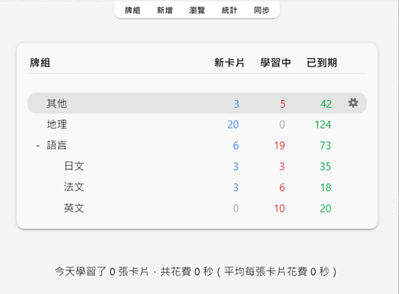

學習 Studying (英文)
- 牌組 Decks
- 學習概覽 Study Overview
- 問題 Questions
- Answer Buttons
- 學習/重新學習 Learning/Relearning Cards
- 複習 Review Cards
- 到期數量 Due Counts
- 模糊乘數 Fuzz Factor
- 「編輯」和「其他」 Editing and More
- 顯示順序 Display Order
- 關聯卡片和推遲 Siblings and Burying
- 快速鍵 Keyboard Shortcuts
- 進度落後 Falling Behind
找到牌組或加入筆記後，你可以開始學習了。
牌組 Decks
選取牌組開始學習時，Anki 只會從你所選牌組及其子牌組中「收集」（抽取）卡片。
牌組畫面中顯示了牌組及子牌組清單。每天需要學習的「新卡片」、「學習中」和「已到期」（待複習）的卡片數量也會在這裡顯示。

按一下牌組將前往學習畫面。按一下主視窗上方的「牌組」將回到牌組清單。（你可以使用選單中的「學習牌組…」動作以使用鍵盤進行切換；也可按下 S 鍵來開始學習當前選取的牌組）
按一下牌組右邊的設定按鈕可以重新命名或刪除牌組、更改選項，或匯出牌組。
學習概覽 Study Overview
按下要學習的牌組後，你會在「牌組概覽」畫面上看到今天到期的卡片數量：

卡片分為三種狀態：新卡片、學習中和待複習。在牌組選項中啟用「推遲關聯的 ... 卡片」後，會出現灰色的數字來表示將被推遲的卡片數量：

按一下「開始學習」按鈕後， Anki 將會開始展示當天應學的所有卡片。
在學習過程中，在鍵盤上按 S 鍵就可以回到概覽畫面。
問題 Questions
卡片問題面顯示後，你需要思考答案，然後按一下「顯示答案」按鈕或空白鍵來顯示答案面。雖然不需要急著回答，但建議 10 秒後還答不出來就直接放棄並檢查答案，不要埋頭苦想。
顯示答案後，你需要對比你的答案和顯示的答案，然後選擇你的記憶水平。你還可以讓 Anki 在顯示答案之前讓你輸入答案。
Answer Buttons
After the answer is shown, compare the answer you thought of with the answer that is shown and select any of the following buttons.
-
Again: Select this when your answer is incorrect or when you couldn't recall the answer. If your answer is partially correct, you should be strict with yourself: if it counts as a fail in a real-life context outside of Anki, then it counts as a fail in Anki as well. You'll typically use this button about 5-20% of the time.
Keyboard Shortcut: 1
-
Hard: Select this button when your answer is correct, but you had doubts about it or it took a long time to recall.
Keyboard Shortcut: 2
-
Good: Select this when your answer is correct, but it took some mental effort to recall it. When Anki is used properly, this should be the most commonly used button. You'll typically use this button about 80-95% of the time.
Keyboard Shortcut: 3, Space, Enter
-
Easy: Select this if your answer is correct and it took no mental effort to recall it.
Keyboard Shortcut: 4
If you find it hard to use four answer buttons, you can also use only Again and Good buttons. Use Again for incorrect answers and use Good for correct answers.
Each answer button shows the next time a card will be reviewed again if you select that button. To learn about the settings that control the next review intervals, see the topics Learning Steps, Lapses, FSRS and Advanced in the Deck Options section.
學習/重新學習 Learning/Relearning Cards
學習中的新卡片或遺忘後重新學習中的卡片會顯示一或多次。卡片每一次出現就稱作一個「學習階段」(learning step)。新卡片預設有兩個學習階段：1 分鐘和 10 分鐘。你可以在牌組選項中調整學習階段的數量和時間延遲。
學習時有四個評價按鈕可選擇：
-
按下「重來」會將卡片重置到第一個學習階段。
-
按下「困難」會重複當前學習階段。
- 若卡片處於第一個（且僅有一個）學習階段，延遲將比第一個階段大 50%。但最多只會比當前學習階段長一天。
- 若卡片處於第一個學習階段，且你設定了多個學習階段，則延遲時間取「重來」和「良好」的平均值，即第一個和第二個階段的平均值。
- 若卡片不處於第一個學習階段，按下「困難」會重複上次的延遲時間。
-
按下「良好」會讓卡片前進至下一個學習階段。如果卡片已在最後一個階段，則會成為複習卡（又稱「畢業」）。根據預設，卡片完成最後一個學習階段後，會在第二天出現，之後的延遲會逐漸延長（見下一章節）。
-
按下「簡單」會將卡片立即成為複習卡，無視剩餘的學習階段。根據預設，卡片會在 4 天後出現，之後的延遲會逐漸延長。重新學習時，因為 v1 排程器的「簡單」跟「良好」的間隔一樣，因此不會顯示「簡單」按鈕；而在 v2 以上版本排程器中，「簡單」按鈕會使間隔延長 1 天。
沒有學習過的新卡片即處於第一個學習階段。此時第一次回答「良好」後，卡片會在 10 分鐘後再次出現，跳過 1 分鐘的初始階段。但如果你按下了「重來」，卡片則會在 1 分鐘後再次出現。
你可以在鍵盤上使用 1、2、3 和 4 鍵來選取按鈕，1 鍵為「重來」。按下空白鍵或 Enter 鍵會選取「良好」。
如果沒有其他卡片可以顯示，Anki 會提前顯示卡片。若要保持完整的延遲時長，你可以在「偏好設定」>「排程」>「提前學習上限」中進行調整。
複習 Review Cards
複習學過的卡片時，你可以選擇評價按鈕：
-
按下「重來」表示回答錯誤，卡片未來將更常出現。即卡片被「遺忘」了。請參閱〈遺忘〉章節來進一步了解 Anki 如何處理遺忘的複習卡。
-
按下「困難」後，根據預設，卡片下一次出現的時間將比上一次的間隔稍微更長一些，增加卡片未來出現的頻率。
-
按下「良好」表示上一次 Anki 安排的延遲時間恰好，無須調整卡片輕鬆度。使用預設起始輕鬆度時，卡片下一次出現的時間大約是上一次的 2.5 倍，也就是說，如果卡片上次學習 10 天後再出現，下一次則將在 25 天後出現。
-
按下「簡單」表示 Anki 安排的延遲時間過早。按下後，卡片下次出現前的延遲將比按下「良好」更久，並降低卡片未來出現的頻率。「簡單」會急速增加延遲，因此建議僅用於最最簡單的卡片。一般情況下回答「良好」即可。
跟學習卡片時一樣，你可以在鍵盤上使用 1、2、3 和 4 鍵來回答，1 鍵為「重來」。按下空白鍵或 Enter 鍵會選取「良好」。
要進一步了解演算法如何工作，請參閱〈牌組選項〉章節和 FAQ。
到期數量 Due Counts
顯示問題面時，Anki 畫面底部會顯示三個數字，如 6 + 9 + 59。這三個數字代表新卡片（藍色），學習中的卡片（紅色），以及待複習的卡片（綠色）。如果不想看到這些數字，可以在偏好設定中停用。

在 v1 排程器中，數字表示的是完成佇列中所有卡片所需的複習次數，而不是卡片數量。如果你為遺忘的卡片設定了多個學習階段，則在回答失敗時，增加的數字會大於 1，因為該卡片需要顯示多次。
v2 排程器以後，數字表示的是卡片數量，因此無論卡片剩餘多少個學習階段，在計數時只會算一次。
顯示答案時，Anki 會在每個按鈕上方顯示下一次顯示卡片的預估時間。如果不想看到預估時間，可以在偏好設定中停用。
模糊乘數 Fuzz Factor
按下難易度按鈕的同時，Anki 會為複習卡隨機套用一個模糊乘數，從而使每張卡片稍微錯開，這樣你在相同時間按下相同按鈕的卡片未來就不會一直都在同一天出現。只有 v3 排程器後，回答按鈕上才會顯示套用模糊乘數後的時間，所以如果你使用的是較舊的版本，按鈕上的時間可能會跟卡片的實際間隔不一致。
學習中的卡片也會被賦予最多 5 分鐘的額外延遲，以避免每次出現的順序都相同，但這一延遲不會體現在回答按鈕上。這個功能無法被停用。
「編輯」和「其他」 Editing and More
你可以按一下左下方的「編輯」按鈕來編輯當前筆記。編輯結束後則會繼續學習。編輯畫面與新增筆記畫面非常相似。
右下方的「其他」按鈕提供了更多可為當前卡片或筆記執行的動作。
-
為卡片加上旗標：為卡片加上或移除一個以顏色區分的標記。旗標會在學習時顯示，在瀏覽器中也可以搜尋加上了旗標的卡片。現在在忙想晚點再詳細查詢一個單字？你可以先給它加上旗標。在 Anki 2.1.45 及以上版本，你還可以在瀏覽器中重新命名旗標。
-
推遲卡片/筆記：停止複習一張卡片或一則筆記中的所有卡片，第二天再複習。（若要提前取消推遲，可以在學習概覽畫面按一下「取消推遲」按鈕）。若你當下無法回答某些卡片，或想改時間再學習，則可以使用這個動作。推遲也可以自動套用到同一則筆記的卡片。
使用舊版排程器時，若卡片在學習時就被推遲，卡片會回到推遲前原來的新卡片或複習佇列。
使用 2.1 排程器時，推遲卡片不會重置其學習階段。
-
忘記卡片：移動當前卡片到新卡片佇列末尾。
在 Anki 2.1.50 及以上版本中，當使用 v3 排程器首次學習新卡片時，Anki 會記住卡片的原始順序。在遺忘卡片時可使用「回復原始順序」(Restore original position) 選項來回復卡片到原始順序。
如果啟用「重設重複和遺忘次數」(Reset repetition and lapse count) 選項，卡片的複習和失敗次數將被重設為零。卡片資訊底部的複習歷史記錄不會被移除。
-
設定到期日：將卡片加入複習佇列，並使其在指定日期到期。
-
擱置卡片/筆記：停止複習一張卡片或一則筆記中的所有卡片，直到手動取消擱置（透過瀏覽器中的擱置按鈕）。若你在短期內都不想要複習一則筆記，但又不想刪除，則可以使用此動作。使用舊版排程器時，若卡片在學習時就被擱置，卡片會回到擱置前原來的新卡片或複習佇列。
使用 2.1 排程器時，擱置卡片不會重置其學習階段。
-
選項：編輯當前牌組的選項。
-
卡片資訊：顯示卡片的統計資料資訊。
-
上一張卡片資訊：顯示上一張卡片的統計資料資訊。
-
標記筆記：為當前筆記加入「marked」標籤，以便在瀏覽器中尋找。類似為卡片加上旗標，但加上的是標籤，這樣若筆記有多張卡片，則所有卡片都會在搜尋「marked」標籤時出現。通常使用旗標即可。
-
建立複本：開啟編輯器，重複當前筆記的內容，你可以稍作修改來建立圍繞同一主題的不同卡片。根據預設，複本會與原筆記放入同一牌組。
-
刪除筆記：刪除筆記及其所有卡片。
-
重播音訊：若卡片正面或背面有音訊，重新播放。
-
暫停音訊：若音訊正在播放，暫停播放。
-
音訊倒轉 5 秒/快轉 5 秒：倒轉/快轉正在播放的音訊 5 秒。
-
錄音：使用你的麥克風錄音來檢查你的發音。一旦前進到下一張卡片，錄音就會被刪除。若要將音訊永久加入卡片，請編輯筆記。
-
重播錄音：重新播放你的上一個錄音（如顯示答案後）。
顯示順序 Display Order
學習時，顯示的卡片會從你選取的牌組及其子牌組中抽取。因此，若選取學習「日文」牌組，則其子牌組「日文::課本::第一課」和「日文::單字」也會一併顯示。
By default, for new cards, Anki gathers cards from the decks in alphabetical order. So in the above example, you would get cards first from “French”, then “My Textbook”, and finally “Vocab”. You can use this to control the order cards appear in, placing high priority cards in decks that appear higher in the list. When computers sort text alphabetically, the “-” character comes before alphabetical characters, and “~” comes after them. So you could call the deck “-Vocab” to make them appear first, and you could call the other deck “~My Textbook” to force it to appear after everything else.
New cards and reviews are gathered separately, and Anki won’t wait until both queues are empty before moving on to the next deck, so it’s possible you’ll be exposed to new cards from one deck while seeing reviews from another deck, or vice versa. If you don’t want this, click directly on the deck you want to study instead of one of the parent decks.
Since cards in learning are somewhat time-critical, they are fetched from all decks at once and shown in the order they are due.
To control the order cards appear in, see Display Order. For more fine-grained ordering of new cards, you can change the order in the browser.
Anki 從牌組中收集（抽取）卡片的方式取決於使用的演算法：
根據預設，Anki 在收集新卡片時將依牌組名稱的字母/筆劃數順序收集。在上述例子中，你會先看到父牌組「日文」的卡片，然後子牌組則以筆劃數順序先顯示「單字」再顯示「課本」。若你的牌組是「French」、「French::Vocab」和「French::My Textbook::Lesson 1」，顯示順序則為「French」→「My Textbook」→「Vocab」。你可以利用這個特性來控制卡片出現的順序，把優先級高的卡片放入在清單中靠上的牌組。 依字母順序排序時，「-」會出現在字母前，「~」會出現在字母後。因此，若要讓牌組排在最前面，你可以把它命名為「-Vocab」；要讓另一個牌組排在最後則可以把它命名為「~My Textbook」。
Anki 會分開收集新卡片和複習卡，所以若你學完了 A 牌組的新卡片但未學完複習卡，你可能會同時學習 A 牌組的複習卡和 B 牌組的新卡片，反之亦同。如果不想發生這樣的情況，你可以直接選取要單獨學習的牌組，而不是它的父牌組。
由於學習中的卡片需要儘早完成，Anki 會同時從所有牌組中收集這些卡片，並依到期順序顯示。
要控制特定牌組的複習卡顯示順序，或將新卡片改為隨機順序出現，請參閱《牌組選項》。要對新卡片的順序微調，請在瀏覽器中進行調整。
關聯卡片和推遲 Siblings and Burying
還記得 Anki 可以為你輸入的單項內容建立多張卡片嗎？譬如同時建立一張「正面→背面」和一張「背面→正面」卡片，或是同一段文字中建立兩個克漏字空格。像這樣幾張相關的卡片叫做「關聯卡片」(siblings)。
當你回答的卡片存在關聯的卡片時，Anki 可以自動「推遲」(bury) 這些卡片來防止關聯卡片在同一次學習中一起出現。被推遲的卡片在當天不會再出現，直到第二天才會被取消隱藏，除非你使用了牌組概覽畫面下方的「取消推遲」(Unbury) 按鈕來手動取消推遲。即使關聯卡片與你學習的卡片不在同一個牌組內（例如當你使用了「覆蓋牌組」功能時）也仍會被推遲。
你可以在牌組選項畫面中開啟推遲，可對新卡片和複習卡分別進行設定。
Anki 僅推遲關聯的新卡片或複習卡。學習中的卡片應儘早完成學習，因此不會被推遲；但反過來，學完學習中的卡片時，與它關聯的新卡片/複習卡會照常被推遲。
注意：在 v2 排程器及以上版本中，Anki 會區分手動和自動推遲的卡片，因此你可以取消推遲一張卡片的同時不影響另外一張。
卡片無法同時被推遲和擱置。擱置卡片時，已被推遲的卡片將被取消推遲。Anki 2.1.49 及以上版本中無法推遲已擱置的卡片，在較早版本中則會將卡片取消擱置。
快速鍵 Keyboard Shortcuts
Anki 中大多數的常用動作都可以使用快速鍵來操作。其中大多可在介面中找到：選單項目旁邊標有快速鍵，將滑鼠遊標懸停在按鈕上通常會顯示含有快速鍵的工具提示。
在學習時，按下空白鍵或Enter 鍵會顯示答案。顯示答案時，按下空白鍵或Enter 鍵會選取「良好」按鈕。使用數字鍵 1 至 4 可以選取不同難度的按鈕。比如你可以一隻手指放在空白鍵上來回答大多數卡片，另一隻手指放在 1 鍵上，遺忘卡片時就能按下「重來」。
要使用鍵盤來快速切換牌組，你可以使用「工具」選單中的「學習牌組」項目。你可以使用「/」鍵來切換。打開「學習牌組」後，視窗中會顯示你的所有牌組，上方還有一個篩選器。輸入文字，Anki 就會隨之篩選你的牌組。你可以加入空白來輸入多個搜尋詞彙，Anki 會顯示符合所有詞彙的牌組。搜尋「日 單」或「字 日」都會符合名為「日文::單字」的牌組。
進度落後 Falling Behind
當你的複習進度落後時，Anki 會優先顯示等待時間最長的卡片。等待時間最長的卡片會以隨機順序顯示，直至達到複習上限。這樣的順序可以確保沒有卡片會被長時間遺漏，但會使你在趕上進度之前都不會複習到新學習的卡片。
要更改逾期複習的順序，你可以建立一個篩選牌組。
當你回答逾期的卡片時，逾期的時長會影響 Anki 決定卡片下次何時出現。請參閱 Anki 的間隔重複演算法 來進一步了解。 When you fall behind in your reviews, Anki by default prioritizes cards that have been waiting the longest. This ordering ensures that no cards will be left waiting indefinitely, but it means that if you introduce new cards, their reviews won’t appear until you’ve gotten through your backlog.
When you answer cards that have been waiting for a while, Anki factors in that delay when determining the next time a card should be shown. This means if you are returning to Anki after a long break, you don't have to start anew and can just start back from where you left.